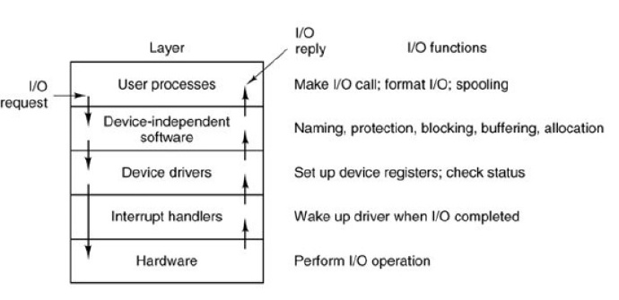

从软件系统的层次介绍I/O的实现过程
I/O软件目标
设备无关性
- 程序员写出的软件无需修改便能读出软盘、硬盘以及CD-ROM等不同设备上的文件
统一的命名
- 一个文件或设备名将简单地只是一个字符串或一个整数，而完全不依赖于设备。
- 在UNIX和MINIX 3中，所有的磁盘可以以任何方式集成到文件系统层次结构中去，用户也不必知道哪个各字对应着哪个设备。
容错功能
- 错误应在尽可能接近硬件的地方处理，低层软件可以自行处理错误，尽可能向上层软件透明
协同同步与异步传输
- 多数物理I/O是异步传输，用户接口是阻塞的，需要使之协同
设备共享
- 某些设备可同时被多个用户使用，另一些设备则在某一时刻只能供一个用户专用
I/O软件系统的层次结构
分为中断处理器、设备驱动程序、设备无关I/O软件、用户空间I/O软件四个层次结构。
中断处理器
中断需要尽量加以屏蔽，需将其放在操作系统的底层进行处理，以便其余部分尽可能少地与之发生联系。
- 这里的中断是由硬件产生，一般在I/O完成后会发生。
- 屏蔽中断的最好方法是将将启动I/O的驱动程序阻塞，直至I/O操作结束并发生中断，解除阻塞。
- 在Minix中，驱动程序为单独的一个进程，因此可以使用这个模型。
设备驱动程序
设备驱动程序中包括了所有与设备相关的代码。每个设备驱动程序只处理一种设备，或者一类紧密相关的设备。
功能
设备驱动程序的功能是从与设备无关I/O软件中接收抽象的请求，并负责执行该请求。
实现
- 将设备驱动程序放在系统内核中，可以获得良好的性能，但会影响系统的可靠性--很多安全漏洞都是这样产生，因为I/O驱动程序有着很高的权限
- MINIX3将其作为用户模式的进程，以提高其可靠性
工作流程
- 将I/O请求转换为更具体的形式
- 驱动程序将向控制器的设备寄存器中写入这些命令
- 这些控制命令发出后，存在两种情况
- 驱动程序需等待控制器完成一些操作，所以驱动程序阻塞，直到中断信号到达才解除阻塞（主要）。
- 另一种情况是操作没有任何延迟，所以驱动程序无需阻塞
设备无关I/O软件
是执行适用于所有设备的常用I/O功能，并向用户层软件提供一个一致的接口。
在标准接口情况下，可以方便地加入新的驱动程序。
功能
设备驱动程序的统一接口
设备无关I/O软件负责将设备名映射到相应的驱动程序
- 通过设备名确定一个i-节点，这个节点包含主设备号，通过主设备号可以找到相应的设备驱动程序
- i-节点也包括次设备号，作为参数传给驱动程序，用来指定要读或写的具体单元。
检查用户是否有权使用设备
缓冲
- 对于块设备，硬件每次读写均以块为单元，而用户程序则可以读写任意大小的单元。如果用户进程写半个块，操作系统将在内部保留这些数据，直到其余数据到齐后才一次性地将这些数据写到盘上。
- 对字符设备，用户向系统写数据的速度可能比向设备输出的速度快，所以需要进行缓冲。超前的键盘输入同样也需要缓冲。
错误报告
错误处理多数由驱动程序完成，多数错误是与设备紧密相关的，因此只有驱动程序知道应如何处理（如重试、忽略、严重错误）。
分配和释放专用设备
一些设备，如CD-ROM记录器，在同一时刻只能由一个进程使用。
这要求操作系统检查对该设备的使用请求，并根据设备的忙闲状况来决定是接受或拒绝此请求。
提供与设备无关的块大小
不同磁盘的扇区大小可能不同，设备无关软件屏蔽了这一事实并向高层软件提供统一的数据块大小。
用户空间I/O软件
- I/O相关的库例程
- 假脱机系统(spooling)
- 创建一个特殊的daemon进程，解决多个进程使用打印机的资源管理问题
outline

参考资料
- Operating System:Design and Implementation,Third Edition